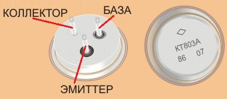
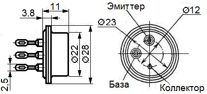

Транзистор КТ803А
Транзисторы КТ803А - кремниевые, мощные, среднечастотные, структуры n-p-n.
Корпус металлостеклянный.
Маркировка буквенно - цифровая, сверху корпуса.


Рис. 1 - Внешний вид, цоколевка и габаритные размеры транзистора КТ803А
Таблица 1
| Граничная частота коэффициента передачи тока в схеме с общим эмиттером при UКБ=10 В, IЭ=0,5 А, не более |
20 МГц |
| Статический коэффициент передачи тока в схеме с общим эмиттером при UКБ=10 В, Iк=5 А |
|
| КТ803А | 10-70 |
| 2Т803А | 10-50 |
| при Тк=-60,15°С 2Т803А | 6-50 |
| при Тк=-40,15°С КТ803А, не менее | 6 |
| Напряжение насыщения коллектор-эмиттер при Iк=5 А, Iб=1 А | 0,5 -1,75-2,5 В |
| Статическая крутизна прямой передачи в схеме с общим эмиттером при Uкэ=10 В, Iк=5 А, не менее |
2 А/В |
| Время включения при Uкэ=40 В, Iк=6 А, tи=0,5-10 мкс | 0,1-0,3 мкс |
| Время выключения при Uкэ=40 В, Iк=6 А, tи,5-10 мкс | 0,1-0,4 мкс |
| Время рассасывания при Iк=1,5 А, Киас=2, Rн=10 Ом, tи=10 мкс | 0,6-2,5 мкс |
| Ёмкость коллекторного перехода при UКБ=10 В | 300-400-500 пФ |
| Обратный ток коллектор-эмиттер при Rэб≤100 Ом | |
| при Тк=-60,15°С и 24,85°С, Uкэ=70 В | 5 мА |
| при Тк=124,85°С, Uкэ=60 В | 15 мА |
| Обратный ток эмиттера при UЭБ=4 В, не более | |
| 2Т803А | 20 мА |
| КТ803А | 50 мА |
| Предельные эксплуатационные данные КТ803А, 2Т803А | |
|---|---|
| Постоянное напряжение коллектор-эмиттер при Rэб ≤ 100 Ом | 60 В |
| Импульсное напряжение коллектор-эмиттер при UЭБ=2 В, tи≤10 мкс, Q≥2 | 80 В |
| Постоянное напряжение эмиттер-база UЭБ | 4 В |
| Максимальный постоянный ток коллектора | 10 А |
| Постоянная рассеиваемая мощность транзистора (на радиаторе): | |
| 2Т803А при Тк=213 ... 323 К | 60 Вт |
| КТ803А при Тк=233 ... 323 К | 60 Вт |
| КТ803А при Тк=99,85°С | 30 Вт |
| 2Т803А при Тк=124,85°С | 15 Вт |
| Тепловое сопротивление переход-корпус | 1,66 К/Вт |
| Температура перехода | 149,85°С |
| Температура окружающей среды | |
| 2Т803А | От -60,15 до Тк=124,85°С |
| КТ803А | От -40,15 до Тк=99,85°С |
Источники
elektrouzel.ru - Транзистор типа: КТ803А, 2Т803А